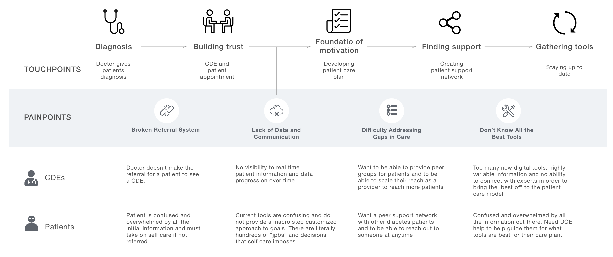
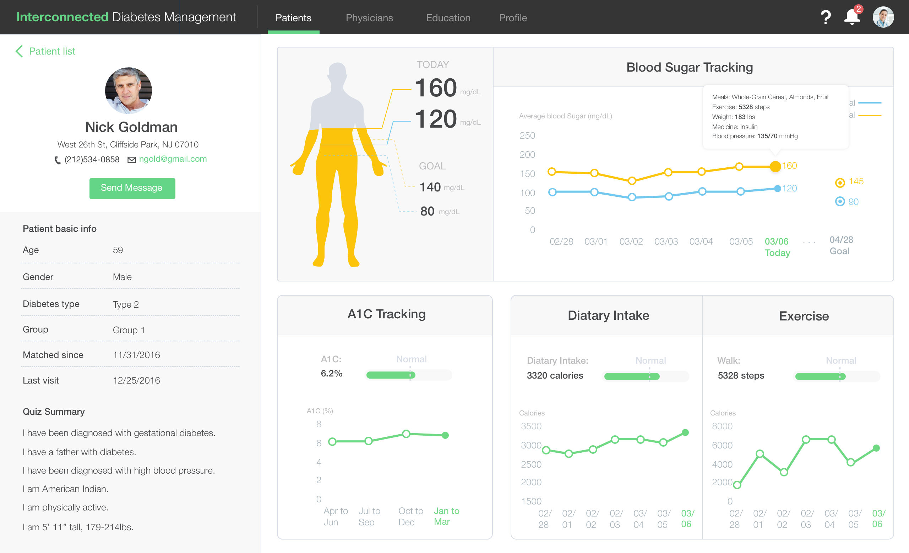

IDEATION
Storyboard
Storyboard user scenario to have an idea of when users use the product, how users use the product, and what users use the product for?

A tool that connect Diabetes patients and health care providers to deliver health care and help diatetes patients self-care.
This project focuses on improving care-delivery for mid-tier health care providers and their Diabetic Patients. The solution approach is to address these challenges by raising the health care providers EFFICIENCY and EFFECTIVENESS while increasing patient ENGAGEMENT in their SELF-CARE.
This is a design challenge that I did in 3 days individually, I learned users' pain point from design challenge document and desktop research. Then worked on user flow, storyboarding, wireframing, interaction design, and visual design, and also create style guide throughout the design process.
THE CHALLENGE
UNDERSTAND USERS
Broken system among patients and CDEs that resulted in CDEs could not get patients data and then assist patients to self-care.
IDEATION
Storyboard
Storyboard user scenario to have an idea of when users use the product, how users use the product, and what users use the product for?
Flow Chart
Doctor refer patient to CDEs, the system helps to pair a CDE for patient. CDE creates self-care plan for this patient and group patient. Patient reports self-care data through system for further communication.
WIREFRAMES
Considering the most often used feature for diabete patients will be tracking their everyday life, I decided to design a mobile application for them to access the system and log their daily data conveniently.
Considering CDEs will use the system during their office hour, I decided to design an web-based dashboard that they can easily get an overview of patients' data and then manage their patients within a platform.
DESIGN: CDEs ONBOARDING
Sign up and input personal information: Experience, Availability, Certificate, Insurance...
DESIGN: PATIENTS ONBOARDING
Sign up and complete a quiz, then select a local diabetes expert to schedule an offline appointment
Recommend the best matched CDE and also enable diabetes to browse and choose other local CDEs from the system.
CDE affiliation, personal info, education resources, and reviews showed in CDE’s page to help build trust between CDE and patients.
After the patient matched a CDE, system requires the patient to make a first time appointment with the CDE to kick off the self-care journey.
DESIGN: PATIENTS SELF-CARE DAILY lOG
Diabetes patient follows the self-care journey and the pre-defined daily tasks to log their health data by using various interconnected measuring tools. The system will automatically monitor user’s situation and provide feedbacks and rewards.
Intelligent devices could make things much easier for diabetes patients to keep tracking of those important indexes such as Blood Sugar, Blood Pressure, weight.
By leveraging the APIs of the intelligent devices, the Diabetes Management will receive data automatically. They will manually input other information.
A chart visually show diabetes’ blood sugar variation, while the period goal showed to encourage user.
DESIGN: SELF CARE JOURNEY AND MENU
Self-care journey is co-managed by the patient him/herself and his/her CDE. With all of the tasks listed in a timeline, diabetes patients will have a clear idea regarding what to do in the near future.
DESIGN: CDEs PATIENT LIST
Filters enable CDE to choose type of patients to view. Patient’s today’s status showed in patients list so that CDE can give feedbacks easily according to patient’s status.
DESIGN: CDEs PATIENT PAGE
Patient’s basic information and quiz summary to get an overview of the patient. By visually showing patient’s blood sugar variation, A1C variation, dietary intake, and exercise, and comparing patient’s today’s data with normal data, CDE can learn and manage patient efficiently.
STYLE GUIDE
In this project, I never meet the users in my life before and I can only learn users’ pain point from design challenge documents since I only have three days to work on design solution. I hope I can get touch with the users in the future so that I can talk with them and learn small details in their life. Only in this way, I could iterate my design to make it more mature.
Context Analysis
Desktop Research
Flow Diagram
Brainstorming
Site Map
Ideation Sketch
Wireframing
Prototyping
Iteration